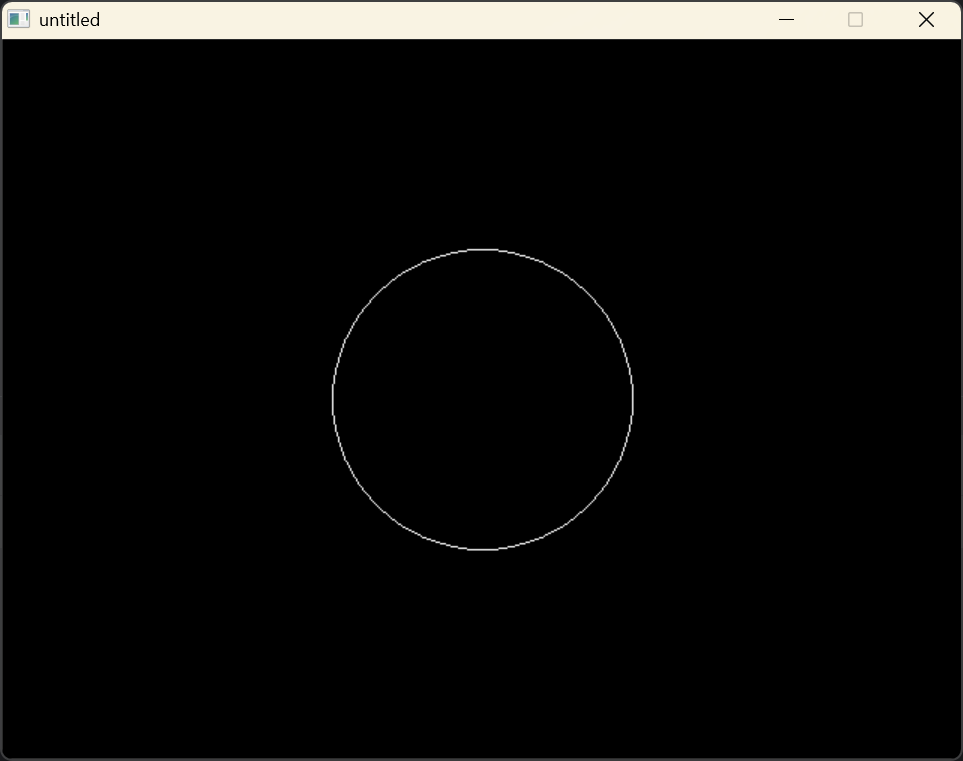

# EasyX
感谢 Limia40 的教程
博主直接使用 CLion 自带的 MinGW，操作如下
- 打开官网，点击右上角更新日志，下载
EasyX_for_MinGW - 解压
- 将 include 文件夹下的
easyx.h和graphics.h拷贝到CLion\bin\mingw\x86_64-w64-mingw32\include - 将 lib64 下的
libeasyx.a拷贝到Clion\bin\mingw\x86_64-w64-mingw32\lib - 在 CMakeLists.txt 文件下添加以下代码，在 add_executable 之前：
link_libraries(libeasyx.a) |
以上，可以新建项目运行以下代码进行测试：
#include <graphics.h>
#include <conio.h>
int main()
{
initgraph(640, 480);
circle(320, 240, 100);
_getch();
return 0;
}
结果如下：
# Vcpkg
下载好并配置完环境变量后，发现必须依赖 visual studio…… 放弃了